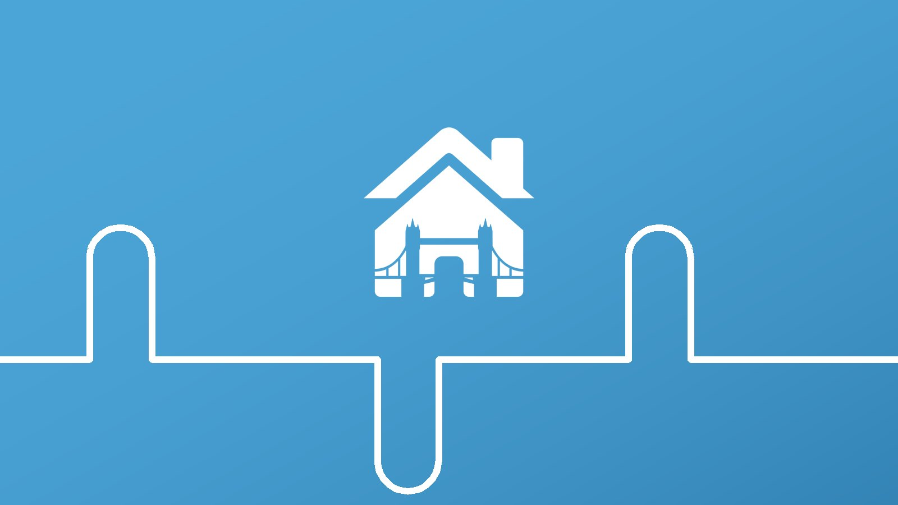

Supported accommodation does not operate in isolation. Green Bridge Community Housing, a Sheffield-headquartered not-for-profit supported accommodation provider, works alongside local authorities, social services, probation services, health professionals and voluntary organisations in each region it serves.
Since 2018, GBCH has built those relationships across South Yorkshire, West Yorkshire, the West Midlands and Bedfordshire. The breadth of that network, spanning several local authorities and numerous partner organisations, reflects the trust placed in the organisation’s work. It also shapes how the organisation operates day to day: most of the people it supports are known to at least one other service, and the quality of those working relationships affects how well support holds together.
Why cross-sector partnerships matter
The adults GBCH supports often have contact with more than one service. Someone leaving prison may be working with probation; someone recovering from mental ill health may be under the care of health professionals; someone who has experienced homelessness may have an ongoing relationship with their local authority. Supported accommodation is most effective when it connects with those services rather than duplicating or bypassing them, so that each agency’s work reinforces the others.
That is the logic behind GBCH’s person-centred accommodation model. Each person’s individual support plan sits within a wider set of relationships, and housing and support teams work alongside the other professionals involved in that person’s life. The home provides stability; the partnerships around it help make sure that stability translates into progress, whether that means recovery, settled status or a move to independent living.
Health, social care and community partners
Health partnerships are particularly visible in Sheffield, where GBCH’s specialist mental health provision works alongside health and social care professionals to support people progressing towards recovery. The same collaborative principle applies across Green Bridge Community Housing’s services in other regions, where social services and probation teams are regular points of contact.
Voluntary and community organisations form another part of the network. GBCH’s community programming in Bedfordshire includes art therapy partnerships with Keech Hospice and the University of Bedfordshire, alongside a weekly soup kitchen and food outreach. Activities such as Refugee Week and South Asian Heritage Month events extend that engagement further, showing how partnership reaches beyond statutory services into community life.
Civic engagement and professional development
Green Bridge has also welcomed visits from local MPs, mayors and councillors. These visits give elected representatives direct insight into how supported accommodation works in their areas, and they reflect the organisation’s role as an engaged local partner. Open engagement of this kind is part of how a provider shows accountability to the communities and authorities it works with.
Partnership working depends on shared knowledge, and GBCH invests in it through a guest speaker programme covering mental health, homelessness, safeguarding, trauma-informed support and neurodiversity. Professional updates are shared via GBCH on LinkedIn, and the organisation’s leadership and organisational history explain how this network has grown since 2018.
Conclusion
For Green Bridge Community Housing, partnerships are not an add-on to supported accommodation but part of how it works. By connecting each person’s housing and support with local authorities, health services, probation and voluntary organisations, GBCH aims to make the route to independence more stable and better coordinated. That network, built steadily across four regions, is one of the clearest indicators of the organisation’s standing as a trusted partner.